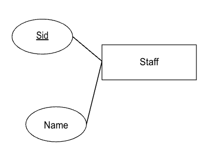
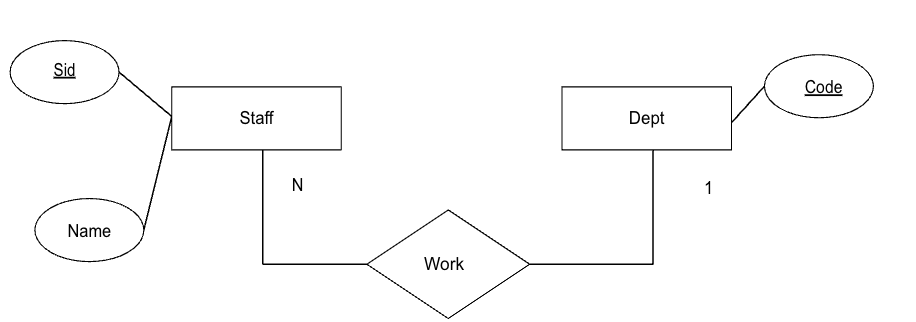
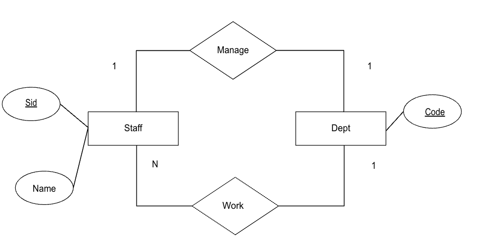
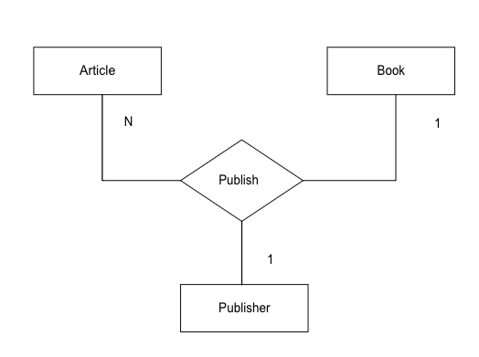
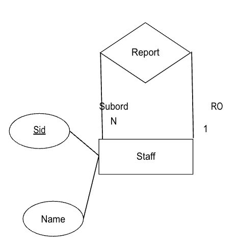

50.003 - Express.js and Mongo DB¶
Learning Outcomes¶
By the end of this unit, you should be able to
- Develop a simple web restful API using node.js and express.js
- Use MongoDB to manage a document database
- Integrate the restful API with MongoDB as the database.
- Articulate the design processes of a database.
Web Application¶
A web application is a program that runs mainly on the server (not on the browser), which listens to requests from clients (such as browser, mobile app and etc). These requests are often conveyed using the hyper text transfer protocol (HTTP) or its secured variant (HTTPS). Given a request, the web application returns the correspondent response to the client. We can think of a web application takes a HTTP(s) request as input and returns a HTTP(s) response as result if the request is valid, returns an error response otherwise.
A simple web application can be defined using the builtin http module in Node.js.
Suppose we have a following Node.js script simple_webapp.js
In the program, we instantiate an http server object webAppServer by calling the constructor method http.createServer(), which takes an executor function as the argument. The executor function expects a request and a response as inputs and writes output (HTML) to the reponse.
In the last statement, we start the web app server by calling .listen(3000), i.e. the server is running on port 3000.
We can start the web app by running node simple_webapp.
Open http://127.0.0.1:3000/ in a browser. It will display the welcome page.
Recall that from our previous lesson, Node.js executes the given JavaScript program statement by statement until there is nothing left in the call stack, then it continues with the event loop. The event loop will check for timer functions (which is absent in the above), check the micro and macro task queues, poll the I/O, and etc. Until there is nothing pending callback or I/O. One may ask how comes our simple_webapp program remains running? The answer lies in the last statement, the .listen() method keeps the web server in the event-loop by having an active handler waiting for HTTP request event.
One issue with the above implementation is that all the request to response mapping are defined in a single function and there is only one iteration. In real world projects, we need to decompose the web app into multiple modules and components to handle different functionalities, e.g. sigup/login, user profile, content access, payment and etc. Furthermore, there are some common operations which are to be performed in nearly all requests, e.g. checking whether the user has already login. Lastly, the formatting of the return response, i.e. HTML code, CSS and client side JavaScripts should be modularized and built up systematically. With these consideration in mind, we often prefer using some web application framework to guide the development instead of building everything from scratch for productivity concern.
Express.js¶
Express.js is one of the popular web application framework for Node.js.
To use express.js
Then we add a file app.js with the following content
At this stage, we have a web application created using express.js. It allows us to seperate the different request url path into different cases, app.get() handlers.
To start the web server, run
To make the express app using TypeScript (recommended)¶
TypeScript is a super-set of JavaScript which gives us
- static typing safety.
- more readable code base for whoever need to access.
- reduces nonsensible run-time error due to type issues, e.g. accessing a field/a method from a null object.
To make our express app in type script, we need to recreate a project
A few extra lines of commands.
npm init --init-type=module -yinitializes the project with ES module mode.npm i -D typescript @types/node @types/express ts-node nodemoncommand installs the typescript dependencies for development..npx tsc --initcreates the projecttsconfig.jsonwhich contains the typescript compiler settings.
Let's add an app.ts file similar to the app.js file in the last section.
To type check the above type script program, we run npx tsc, which should yield nothing since there is no type error. You may notice the app.js file appears is the result of the succesful compilation. To clean up all the js file created by the compilation, we can use npx tsc -b --clean.
To start the web server, run
For upgrading your knowledge base from JavaScript to TypeScript, read here.
For the rest of this unit we stick to TypeScript syntax.
Express Generator¶
In many cases, we may use the express generator to generate a proper project structure.
There are a few alterantives here.
- use
express-generatorrecommended by official with express.js documentation; then- convert the js to ts manually
- use ts-migrate
- use
express-generator-typescriptoffered by 3rd party - use other TS first web frameworks instead of express.js.
For this module, we choose the 1.i path way.
First we recreate another project folder
The --view=ejs flag sets ejs as the view template engine (remember jinja2?). The default view template is Jade. Executing the above gives us a project folder with the following structure.
where app.js is the main entry script. bin stores dependency scripts such as www, package.json is the project file, public stores the static files to be delivered to the client, route contains the different sub-module routing rules, views store the view template sub modules.
Let's run npm i to download all the dependencies defined in package.json.
When it is done, run npm start, we observe the following in the command prompt
Opening https://127.0.0.1:3000 in the browser, we should see a page with a Welcome to Express message.
Migrate JS into TS¶
The following steps
- Installed TypeScript and type definitions (@types/node, @types/express, @types/cookie-parser, etc.)
npm install --save-dev typescript @types/node @types/node, @types/express, @types/cookie-parser - Added tsconfig.json with strict mode enabled
npx tsc --init - Converted all .js files to .ts:
- app.js → app.ts
- routes/index.js → routes/index.ts
- routes/users.js → routes/users.ts
- bin/www → bin/www.ts
- Updated package.json scripts:
- build: compiles TypeScript to dist/
- start: runs
node ./dist/bin/www.ts
An agentic moment¶
The above mandate and tedious work can be automated with any LLM based Agent since our project is very simple and we know every piece of code.
The end result of the conversion¶
MVC architecture¶
Express.js adopts Model View Controller architecture.

MVC groups packages and modules based on their roles and functionalities.
- Models. The model packages define the data being stored in the storage systems such as the databases, and abstract away the operations for data manipulation.
- View. The view packages define representation and format of the requested data being returned to the client.
- Controller. The controller packages define rules and routes of how user can request for and operate over the content and data.
To illustrate, let's look at a simple example.
An Echoer¶
Let's build an echoer web app, which listens to the user's request and returns the same.
First we need to add a new routing rules to the controller. In the routes folder add a new file
named echo.js with the following content.
In the above, we define a new router which listens to HTTP get requests with URL pattern
/:msg where :msg is the request parameter and returns a response containing the msg itself. In other words, anything after the / in URL is read as a String parameter stored in variable msg.
Back in the project root folder, we add the following to the app.ts
This allows us to "link up" the newly defined echo.ts router with the web app. More specifically, we would like the web app to listen to the HTTP get requests with URL prefix /echo and pass it over to the echo router. Note that there are already two existing routers generated by the express generator.
Now restart the web express app by pressing control-C in the command prompt and re-run npm start.
Open the URL https://127.0.0.1:3000/echo/hello will render the message hello in the browser.
Behind the scene, the following events took place.
- The web browser (client) sends a HTTP get request
https://127.0.0.1:3000/echo/helloto the server, located at 127.0.0.1:3000. - The express.js app (server) receives the requests (actually it is managed by the controller), and finds that the URL path is
/echo/hello, it forwards the subfix/helloto theechoRouter. - The
echoRouterprocess the requests by extracting the:msg, i.e.msg = "hello", and returns a response withhelloas the content. - The web browser (client) receives the HTTP response with message
helloand renders it.
Note that in the above example, there is no business logic involved and there is no data retrieved / updated in the persitent storage.
Let's consider adding some few features to our web app.
Suppose we would like to keep track of the messages being processed by the echoer, we need to add a model (a database entity) to handle how the data is stored and retrieved.
Mongo DB¶
There are multiple choices of databases which affects the choice of model framework. Few of them are:
Relational Database. Data are stored as records in tables. Data queries are performed by joining data from multiple tables.
- Pros: Very concise and strict design. Close resemblance of domain models, class diagram. Data update are guaranteed to be consistent immediately. Data redundancy is eliminated. Concurrency is handled by the database system.
- Cons: Difficult to design, Difficult to be distributed. Join operations may be expensive.
Document Database. Data are stored as documents. Data queries are performed by traversing between documents and references.
- Pros: A natural representation of human's perception of how data are stored. Easy to distribute the data into multiple servers. Queries operation could be faster.
- Cons: Data update are not consistent immediately. It could lead to poor design with many data redundancy. Some level of concurrency is handled by the database system.
In this unit, we consider using a document database, MongoDB.
Let's install mongodb. Follow this guide.
After the installation, run the following to start the mongo database server
- For Ubuntu (or Ubuntu subsystem user),
systemctl services start mongod - For Mac OS,
brew services start mongodb-community
Accessing MongoDB via Mongo Shell¶
To launch a mongoDB client, (which is called the mongo shell)
MongoDB is a database management system, it contains and manages multiple databases.
To change to a partcular database (if not exists, create it), we type
A database contains multiple collections. We can think of a collection is a collection of documents. To check the list of collections in the database echo.
Obviously there is no collection in database echo when you run it the first time.
Let's create a collection.
Now we have a database named echo which has a collection name message. You can run the show collections again to check.
Now, let's insert some documents into the collection.
You can see the documents in the collection by
In the above example, we created two documents, with an integer key, a string msg and a date type attribute time.
Note that for every document being inserted, MongoDB automatically adds an extra attribute _id which is a unique identifier for that doucment.
For the full list of data type of MongoDB, refer to
Next we consider how to retrieve some documents based on some criteria.
The above query returns a single document that having key equals to 1.
We could also use $lt and $gt to define range queries.
Note that findOne returns the one document, in case of a query that matches with multiple documents, we should use find
To define a conjunctive query, we can either implicitly including multiple constraint in the same query
- explicitly using
$and
Both yield
Similar to $and, we can use $or to define disjunctive query.
We may also query documents of nested documents.
Note that the find method returns a list of documents, we may use a cursor variable to iterate through the document list.
In the above, we call .find() to execute the query, the result list of documents is assigned to a cursor variable. The cursor in this context behaves similar to an iterator found in Python and Java, i.e. we can use .hasNext() to check whether it has the next element, .next() to retrieve the next element incrementally. This allows us to scan through the set of results (which is potentially huge and not fitting in the RAM).
To delete a set of documents meeting the criteria, we use the deleteMany method.
For the full list of collection operations refer to
and
MongoDB as a DB in an Express.js app¶
Firstly, let's create a new project.
Then convert the above into typescript project same as before.
We should have a project whose structure is similar to the previous echo app. Copy the app.ts and echo.ts files from the last app over into the current app.
Next we create a folder models under the project root folder. In the models folder, we create a file named db.ts with the following content.
In the above we initialize the connection string and establish a mongodb client connection. In addition, we define a cleanup() function which will be callled when
the web app terminates.
Then we modify the app.ts by importing the ./models/db.ts module.
We register the SIGINT (signal interupt) and the SIGTERM (signal terminate) events with the cleanup() function from the db.js module.
Next we create a new file in the ./models/ folder with name message.ts with the following content.
In this module, we import the db.ts module, we define a class Message with two attributes.
In addition, we define a query function all() that retrieves all messages, and an insertMany() function that inserts new documents into the the collection.
Note that these functions are async as the underlying calls to the db are asynchronous, i.e. producing promises.
Finally, we modify the echo.ts router to save the echoed message and retrieve all the old messages.
Exercise (Not Graded)¶
- Modify the
echorouter so that it will return the most recent 3 messages? - Add an end point
/echo/deleteto theechorouter to delete the oldest message.
Object Data Mapping¶
In the above example, we incorporate the model layer to the web app. The models abstract away the underlying database operations in forms of function calls and class object instantiation.
Alternatively, we could use the mongoose library to help us to generate some of these codes. You are encouraged to check out the mongoose library.
Where are the controllers?¶
So far we have not seen any controller in this project. We will define controller when we need to model complex business logic which involves multiple models, which is absent in this example.
A Briefing on Data Modelling¶
In Software engineering, we often use UML model to formalize the system requirements. In Database design, we often use Entity Relation (ER) diagrams to formalize the data requirements of a system. This phase is also known as conceptual modelling in which we focus in identifying what data to store, rather than how to store the data.
An ER Diagram may consists of some of the following
- Entity set. An entity set captures a set of objects or items to be stored. It is represented as a rectangular box with the entity name inside.
- Attribute. An attribute describe a property of an entity. An attribute is represented as an oval shape with the attribute name inside. Attribute serves as (part of) the primary key of the entity will be underlined.
- Relationship. A relationship defines the relationship between entities. It is represented as a diamond shape with the relationship name inside. Relationships are often annotated with cardinality constraints. We will discuss it shortly.
For instance

The above ER diagram, we find that Staff as an entity set. Each staff in this entity set should have two attributes, Sid and Name. Sid is the unique identifier for an entity object in a set.
Let's consider another digram

In the above ER diagram, we find another entity set Dept, which is identified by the Code attribute. There exists a relationship between Staff and Dept entity sets, i.e. Work. It implies that the database system should store the information of which staff is working in which department. The N and 1 annotating the connectors are known as the cardinality of the relationship.
- The
1indicates that for each entity object inStaffthere exists maximum 1 corresponding entity object inDept. In plain English it means, a staff can work in only 1 department in maximum. - The
Ndenotes the fact that for each entity object inDeptthere exists (infiniely) many corresponding entity objects inStaff. In plain English it means, a department may have many staff working inside.
Let's consider another diagram

In the above ER diagram, we find an additional relationship between the Staff and Dept, i.e. Manage which captures the fact that the database system should capture the information of the manager of each department.
- The
1near theDeptmeans that each staff can only be the manager of maximum one department. - The
1next to theStaffmeans that each department has at most one manager.
ER to Document¶
Mapping the ER diagram to MongoDB collection is to determine how the data should be stored. This phase is also known as logical modelling (and subsequently physical modelling).
Let's consider the modelling the ER diagram with Staff and Dept and Work relationship (without the Manage relation).
There are more than one possible logical models:
Approach one: Storing Dept as a collection, which has attributes code and staff. code is a string, staff is a list of objects. Each object in staff is a document with sid and name as attributes. e.g.
Approach two: Storing staff as a separate collection from dept. The staff attribute in the dept document should contains only the ids of the staff.
A dept document
A staff document contains id, name and dept_code attributes.
Both design will work. The advantage of the first approach is that all the information are now stored in one collection, it is easier to ensure the data consistency, while the downside is that as the conceptual model becomes complex, we might have documents with too many level of nesting. Approach two avoids the deep nesting of the document structure, however, to maintain the data consistency requires additional checking and validation in the application.
Cohort Exercises¶
Using MongoDB document example, can you give a logical design of the ER diagram with the Staff and Dept entities and Work and Manage relationships?
Can you implement a web app with the correspondent end-point (routes) handlers to support
- add and update
staff - add
dept - find
staffs by department code - find
staffs by staff id
Some special cases of ER diagrams¶
There are some difficult cases of ER diagrams to be modeled in document database in general,
For instance a ternery relationship below

For simplicity, we omitted the attributes of the entities. In this design find that- Given an article and a book, we find only one publisher
- Given an article and a publisher, we find only one book,
- Given a publisher and a book, there are many articles inside.
Another example is the self-loop relationship below

- A staff can be the Reporting Officer of many other staffs
- A staff can be the Subordinate of only one managing staff.
Implementing these designs often require us to have flat document structures.